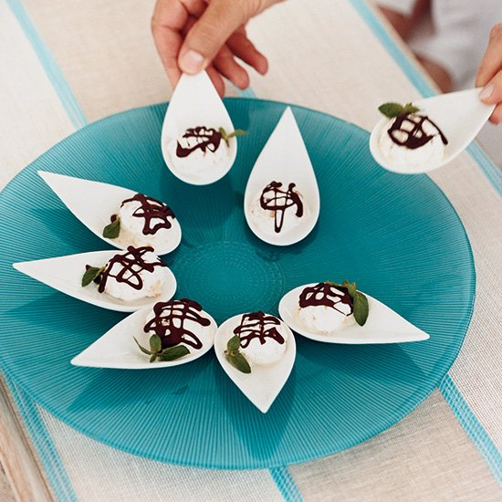

Колкото и добра да е кухнята на дадена националност, то тя не би могла да добие завършен вид без черешката на тортите в кулинарството - а именно десертите. Но Италия може да се похвали дори с десертите си - пухкави, красиви и много вкусни.
Тук ще намерите рецепти на:
Шoколадов мус
Продукти:
Приготвяне :
Сметаната се разбива на пухкава пянa.Шоколадът се добавя в купата при жълтъците. Разбърква се и се слагат белтъците и накрая сметаната. Мусът се разпределя в чаши и се охлажда преди поднасяне.
Италианска ябълкова торта
Продукти:
Приготвяне
Загрейте фурната до 170 ° C. Сложете маслото на котлона да се стопи. Обелете ябълките и ги нарежете на малки парченца. Добавете лимоновия сок и 50 грама (1/4 чаша) захар. Разбийте добре с миксер яйцата и останалата захар. Прибавете разтопеното масло, ванилията, брашното и бакпулвера, смесете добре. Добавете ябълките. Изсипете сместа във форма за печене, поръсете с препечените кедрови ядки отгоре и печете 40 минути. Сервирайте с разбита сметана, яйчен крем или ванилов сладолед.